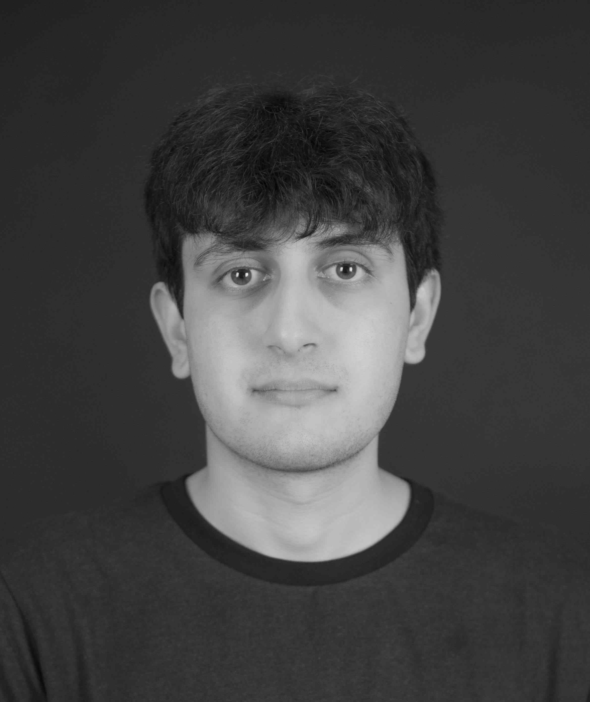

Mit navn er Abasin Safi, jeg er en ung mand der er 22 år gammel Jeg går på multimediedesign uddannelsen i Odense, og det har jeg gjort siden 1 februar 2022. Jeg er meget interesseret i grafisk design, fordi jeg kan godt lide at arbejde med fotografering, og er nemlig en rigtig stor fan af Adobe programmer. Jeg har stor erfaring med Photoshop, fordi det er en af mine yndlings programmer, så derfor bruger jeg det meget i min fritid. På multimediedesign har jeg fået de andre adobe programmer lært. Derfor har jeg også erfaring med Adobe Animate, XD, premiere pro, lightroom classic, illustrator og indesign nu.
